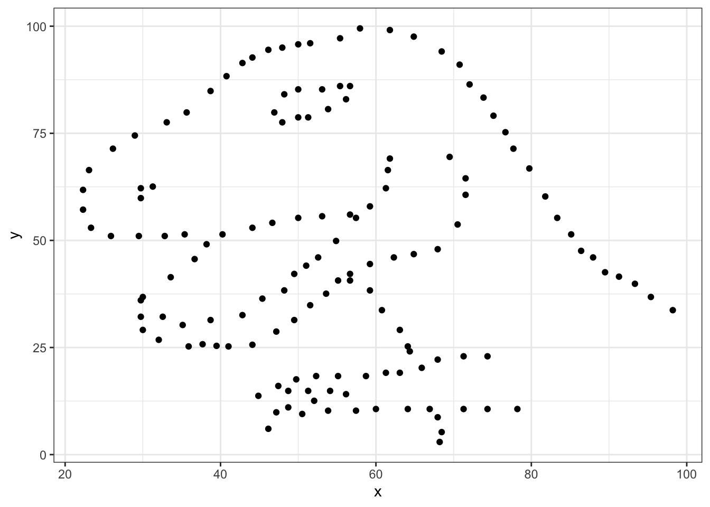
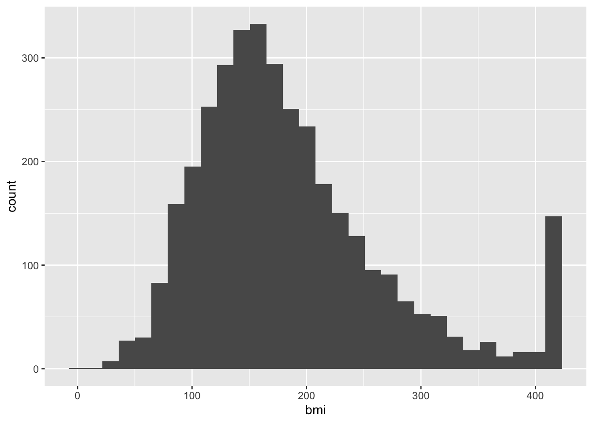
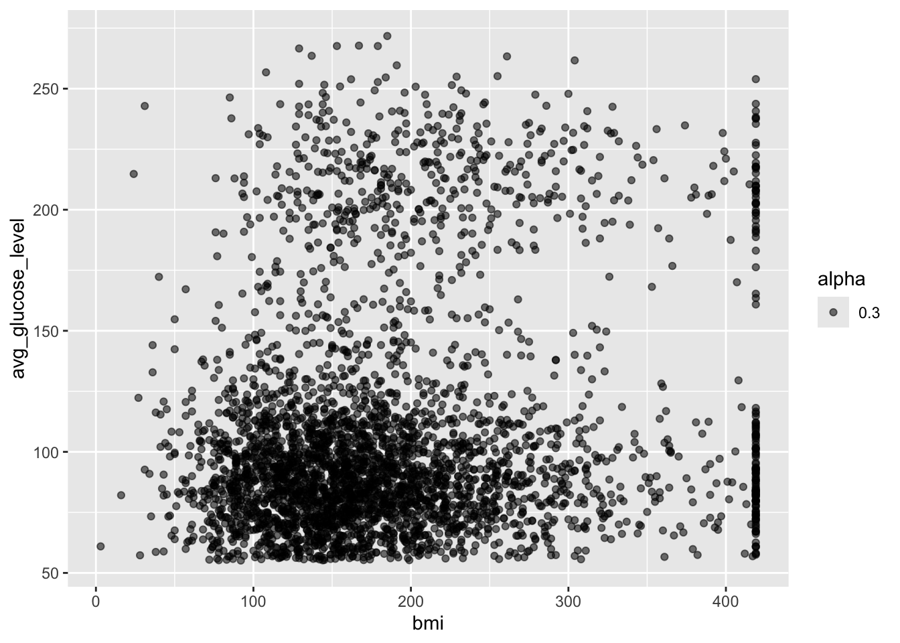
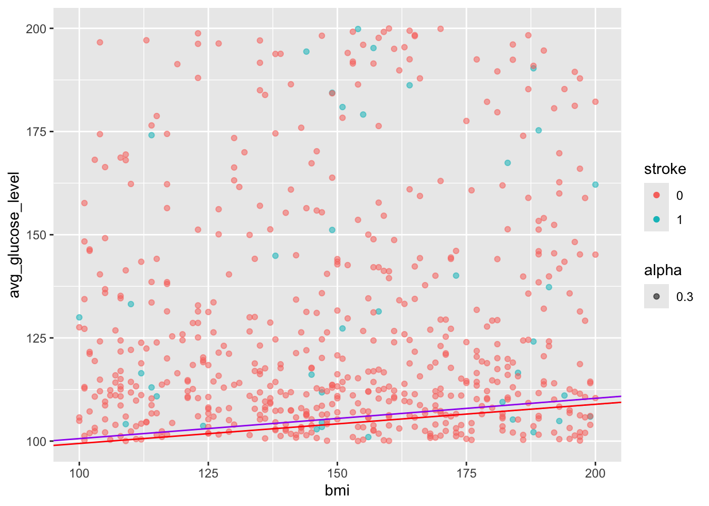

8 Factors
The stringsAsFactors parameter takes care of the character values but we still have some integer values that should be interpreted as factors.
When deciding on whether a number is a factor or should be kept numeric, consider if decimals/numbers-in-between make sense. The first two entries for avg_glucose_level are 229 and 202 - a glucose level in between would be reasonable. In contrast, the first to entries for heart_disease are 1 and 0 - as these are coding for having or not having the disorder, an entry of 1.2 does not make sense.
Recall from the introduction to the dataset from above: 4) hypertension: 0 if the patient doesn’t have hypertension, 1 if the patient has hypertension 5) heart_disease: 0 if the patient doesn’t have any heart diseases, 1 if the patient has a heart disease 12) stroke: 1 if the patient had a stroke or 0 if not
heart$hypertension <- as.factor(heart$hypertension)
heart$heart_disease <- as.factor(heart$heart_disease)
heart$stroke <- as.factor(heart$stroke)
summary(heart)## id gender age hypertension heart_disease
## Min. : 67 female: 7 Min. : 0.08 0 :4612 0:4834
## 1st Qu.:17741 Female:2987 1st Qu.:25.00 1 : 493 1: 276
## Median :36932 male : 6 Median :45.00 10 : 4
## Mean :36518 Male :2108 Mean :43.23 10+D4972: 1
## 3rd Qu.:54682 meal : 1 3rd Qu.:61.00
## Max. :72940 Other : 1 Max. :82.00
##
## ever_married work_type Residence_type avg_glucose_level
## No :1757 Private :2921 Rural:2514 Min. : 55.12
## Yes:3353 Self-employed: 818 Urban:2596 1st Qu.: 77.25
## children : 687 Median : 91.89
## Govt_job : 656 Mean :106.15
## Never_worked : 22 3rd Qu.:114.09
## Private : 4 Max. :271.74
## (Other) : 2
## bmi smoking_status stroke
## N/A : 201 formerly smoked: 885 0:4861
## 28.7 : 41 never smoked :1892 1: 249
## 28.4 : 38 smokes : 789
## 26.1 : 37 Unknown :1544
## 26.7 : 37
## 27.6 : 37
## (Other):47198.1 Incomplete data
Firstly, we have to make a decision on how to handle missing values. We can either accept that some of the columns are incomplete or eliminate rows that do not have full data. Let’s evaluate which columns this affects
If you ever encounter missing data when you are entering data, use NA.

##
## 0 1 10 10+D4972
## formerly smoked 0.1497064579 0.0232876712 0.0001956947 0.0000000000
## never smoked 0.3248532290 0.0448140900 0.0003913894 0.0001956947
## smokes 0.1360078278 0.0183953033 0.0000000000 0.0000000000
## Unknown 0.2919765166 0.0099804305 0.0001956947 0.0000000000Let’s use tidyverse to remove the rows in the smoking_status column with a value of Unknown.
## [1] 5110 12##
## formerly smoked never smoked smokes Unknown
## 885 1892 789 1544## [1] 3566 12## formerly smoked never smoked smokes Unknown
## 885 1892 789 0After double checking, we can see that the smoking status has an empty level, we’ll clean this up before moving on
## formerly smoked never smoked smokes
## 885 1892 789Great! Now let’s tackle the typos in the gender column.
##
## female Female male Male meal Other
## 5 2153 5 1402 0 1We need to fix the typos that happened during data entry and the single observation of Other will not be enough data for us to draw any statistical conclusion so we’ll remove this row while we’re at it.
We can use str_replace_all() as a search and replace tool
##
## Female male Male Other
## 2158 5 1402 1Remember that this only displays the output, it does not replace the columns in the dataset.
Before we apply it globally, we can set up a quick double check to make sure that the right values are changed.
# document which rows have the error "female"
wrong_entry <- which(heart$gender == "female")
wrong_entry## [1] 127 271 941 1930 3021## [1] female female female female female
## Levels: female Female male Male meal Other# apply the search and replace
heart$gender <- str_replace_all(heart$gender, c("female" = "Female",
"male" = "Male",
"meal" = "Male"))
heart$gender[wrong_entry]## [1] "FeMale" "FeMale" "FeMale" "FeMale" "FeMale"##
## FeMale Male Other
## 2158 1407 1There’s an issue with the “male” search grabbing from the “female” word!! Good thing we made a checkpoint earlier. Let’s bring this back to our main heart object - it’s a good habit to make some objects to checkpoint your work. In case you have not had this set up, you can always back track in your code and re-read in the object and re-run some earlier code to catch up.
##
## female Female male Male meal Other
## 5 2153 5 1402 0 1Let’s try this again:
# From previous code
# add ^ (carrot) to the start of the search term to make sure it's only found at the start of the word
heart$gender <- str_replace_all(heart$gender, c("^female" = "Female",
"^male" = "Male",
"^meal" = "Male"))
heart$gender[wrong_entry]## [1] "Female" "Female" "Female" "Female" "Female"##
## Female Male Other
## 2158 1407 1The ^ is a special character that indicates the start of a word.
Lastly, we’ll the one Other entry
##
## Female Male
## 2158 1407Overall, the data is looking much cleaner than when we started!
8.2 Exercise
Investigate the work_type column and correct the data entry problems! Also, remove any “N/A” entries under bmi
##
## children Govt_job Govt_job Never_worked Private
## 69 534 1 14 2281
## Private Self-employed Self-employed
## 3 662 1## [1] "children" "Govt_job" "Govt_job " "Never_worked"
## [5] "Private" "Private " "Self-employed" "Self-employed "heart$work_type <- str_replace_all(heart$work_type, c("Govt_job " = "Govt_job",
"Private " = "Private",
"Self-employed " = "Self-employed"))
class(heart$work_type)## [1] "character"## N/A 28.4 28.7 27 27.6 25.5 27.3 26.1 26.7 26.9
## 140 32 32 30 30 28 28 26 26 26
## 32.3 25.1 25.3 26.4 26.5 27.7 28.3 28.9 29 29.6
## 26 25 25 25 25 25 25 24 24 24
## 30.3 30.9 31.4 23.4 28 28.1 28.6 29.4 23.5 26.6
## 24 24 24 23 23 23 23 23 22 22
## 27.1 27.5 28.2 28.5 29.5 31.1 22.2 24.5 25 26.2
## 22 22 22 22 22 22 21 21 21 21
## 27.9 29.2 29.9 30 30.5 30.7 31.5 32.1 24 24.1
## 21 21 21 21 21 21 21 21 20 20
## 24.2 24.3 24.8 26 27.2 30.1 33.1 35.8 24.9 25.4
## 20 20 20 20 20 20 20 20 19 19
## 28.8 29.7 31.3 32.8 24.4 26.3 27.8 33.7 21.5 22.8
## 19 19 19 19 18 18 18 18 17 17
## 23.1 23.8 27.4 29.3 31 31.6 31.8 34.7 21.3 22.1
## 17 17 17 17 17 17 17 17 16 16
## 22.7 23 23.9 24.6 24.7 25.8 25.9 26.8 29.1 29.8
## 16 16 16 16 16 16 16 16 16 16
## 30.2 30.8 31.2 31.9 32.4 33.5 34.5 23.6 32.2 (Other)
## 16 16 16 16 16 16 16 15 15 1414## Min. 1st Qu. Median Mean 3rd Qu. Max.
## 3.0 128.0 168.0 185.6 223.0 419.08.3 Loops
“For loops” allow R to apply highly automated tasks. It will cycle through a range of inputs and “for” each of them, it will carry out your custom task.
Here’s a very simple example to show you the structure of for loops
## [1] "strawberry"
## [1] "banana"
## [1] "orange"The for() function accepts firstly the name of a temporary object that exists only within the curly brackets of the for loop, the in is a special R syntax specification, and fruit is the object that we are applying the for loop on.
The for loop will take each entry of the fruits object, store it in the temporary object x, and apply the code written written within the curly bracket before repeating with the next entry.
I recommend testing your code outside the for() loop before moving it into the loop to make sure it is robust and if you are applying the loop to a long vector or large dataset, consider trying it on a truncated version first as a proof of principle.
## [1] "formerly smoked" "never smoked" "smokes"heart %>%
filter(smoking_status == "never smoked") %>%
ggplot(aes(x=avg_glucose_level, y=bmi)) +
geom_point() +
ggtitle("never smoked") +
theme_classic()
If we wanted to save a pdf of every category of smoking_status, we can convert our code into a loop. When working on a larger section of code, it is helpful to sketch out the steps you need to do with # comments to keep you focused.
## [1] "formerly smoked" "never smoked" "smokes"## [1] "/Users/jqiu/Documents/CBWgithub/cbw-dev-test-pages/INR-2024-Recreate"for(cat in smoke_cat) {
# Specify file name
filename_cat <- paste0("bmi_glucose_", cat, ".png")
print(filename_cat)
# Making plot (based on code from above)
plot_cat <- heart %>% # SAVE OUTPUT TO OBJECT
filter(smoking_status == cat) %>% # CHANGE TO cat
ggplot(aes(x=avg_glucose_level, y=bmi)) +
geom_point() +
ggtitle(cat) + # CHANGE TO cat
theme_classic()
#print(plot_cat) # PRINT OUT PLOT
# Saving the plot to file
png(filename_cat, width = 700, height= 500, res=120) # Start saving whatever I make now to this file
print(plot_cat)
dev.off() # Stop saving
}## [1] "bmi_glucose_formerly smoked.png"## [1] "bmi_glucose_never smoked.png"## [1] "bmi_glucose_smokes.png"8.4 Exercise
Copy and paste the loop from above and modify it so that the range of values on the x and y axis are the same for all plots.
Hint: the limits of the x axis can be specified by adding a layer called xlim(lower, upper) where it takes two numbers - the lower limit followed by the upper limit. These numbers can be stored in objects or inputted directly . Similarly, there is a parallel function called ylim() which also takes the same two parameters
When working through the code, you can temporarily remove the code removing the axis labels by commenting out the lines with a hashtag.
Great! Now the y-axis does not change between the plots and they are directly comparable.
8.5 Conditional for loops
Boolean statements can be used to write conditional statements. If we do not want the loop to be applied to every item, we can add a condition.
## [1] "This indeed is a pineapple."This will only output if the condition is met. We can also modify this statement to do something in case the condition is not met.
food <- "orange"
if(food == "pineapple") {
print("This indeed is a pineapple.")
} else {
print("This is NOT a pineapple.")
}## [1] "This is NOT a pineapple."Using if else statements will allow more customizability in our code. Let’s use this to add a new column called ever_smoked based on the value in the smoking_status column.
##
## 0 1
## 3363 202## id gender age hypertension heart_disease ever_married work_type
## 1 9046 Male 67 0 1 Yes Private
## 2 51676 Female 61 0 0 Yes Self-employed
## 3 31112 Male 80 0 1 Yes Private
## 4 60182 Female 49 0 0 Yes Private
## 5 1665 Female 79 1 0 Yes Self-employed
## 6 56669 Male 81 0 0 Yes Private
## Residence_type avg_glucose_level bmi smoking_status stroke stroke_history
## 1 Urban 228.69 240 formerly smoked 1 NA
## 2 Rural 202.21 419 never smoked 1 NA
## 3 Rural 105.92 199 never smoked 1 NA
## 4 Urban 171.23 218 smokes 1 NA
## 5 Rural 174.12 114 never smoked 1 NA
## 6 Urban 186.21 164 formerly smoked 1 NAfor(row in 1:nrow(heart)) {
if(heart$stroke[row] == "1") {
heart$stroke_history[row] <- "confirmed_stroke"
} else {
heart$stroke_history[row] <- "no_history"
}
# else >> "no_history"
}
table(heart$stroke, heart$stroke_history)##
## confirmed_stroke no_history
## 0 0 3363
## 1 202 08.6 Exercise
Expected fasting blood glucose concentrations defined by the WHO are between 70 - 100 mg/dL. Create a new column called glucose_WHO in which:
avg_glucose_levelsless than 70 are annotated asfollowupavg_glucose_levelsbetween 70-100 are annotated asaverageavg_glucose_levelsover 100 are annotated asfollowup
Hint: conditions can be combined using the & for and where as | is used for or statements.
## [1] "id" "gender" "age"
## [4] "hypertension" "heart_disease" "ever_married"
## [7] "work_type" "Residence_type" "avg_glucose_level"
## [10] "bmi" "smoking_status" "stroke"
## [13] "stroke_history"# Sorry!
heart$glucose_WHO <- NA
for(row in 1:nrow(heart)) {
if(heart$avg_glucose_level[row] > 70 & heart$avg_glucose_level[row] < 100) {
heart$glucose_WHO[row] <- "average"
} else {
heart$glucose_WHO[row] <- "followup"}
}
table(heart$glucose_WHO)##
## average followup
## 1610 19558.7 Countinous variables
In the heart dataset, we have three continuous variables. In R, continuous variables will be numeric values. Continuous variable have a wide range of ordered values. For example, the age values have a range of 10 to 82 - any value in between is possible.
## `stat_bin()` using `bins = 30`. Pick better value with `binwidth`.
Staticians commonly prefer working with normally distributed data because this is a heavily studied and predictable distribution. Confirming that the variable is normally distributed opens up options for robust statistical approaches to be applied.
Is this heart dataset normally distributed?
QQ plots, or quantile-quantile plots, are unique scatterplots that help us determine the distribution. Rather than black and white diagnostic tool, this is a visualization tool for inform our analysis. The qqnorm() sorts the values in the vector and compares it to a theoretical normal distribution (the norm part of qqnorm).

For a normal distribution, we ideally want a straight diagonal line. Notice the slight curve on the right end, we can see the tail is also on the right side of this histogram. Curves indicate deviation away from normality. This looks faily normal, we can check to see if a transformation improves the distribution.
## `stat_bin()` using `bins = 30`. Pick better value with `binwidth`.

The tail is exaggerated. Since all transformations add some artificial noise, we avoid applying them when it does not significantly improve the shape of our data.
We will proceed with the non-transformed data.
8.8 Linear models
Linear regression models allow us to investigate the relationship between two continuous variables. For simple linear models, we have one independent and one dependent variable. The independent variable is the one that is being controlled or manipulated in the experiment, and the dependent variable will change respectively.
For example, if we are investigating if a high fat diet affects sleep quality, the diet is the independent variable (changing or is different between participants) while the sleep quality is the dependent variable (depending on the diet, the sleep quality will change).
Here, we are investigating the relation between bmi and avg_glucose_level
We’ll first visualize the two variables

Notice here the aes is specified in the geom_point() call rather than the parent ggplot() call. This is helpful if your plots have multiple layers and you want the aes to apply only to one layer. Parameters in the ggplot() call will apply to all layers in the plot where as parameters specified in the geom_point() will only affect this specific layer.
For this plot with only one layer, this has no functional impact on the plot made, but this will be important if you make more complex and layered plots.
This can be read as avg_glucose_level as a function of bmi
Use the function summary() on fit1 object to obtain more details of the model.
## function (object, ...)
## UseMethod("summary")
## <bytecode: 0x104676278>
## <environment: namespace:base>This overall looks like a good model. The p-value is very low and statistically significant. However, the Multiple R-squared values is small and the slope of bmi is low.
From the results, we could conclude that changes in bmi are associated to the average glucose level as the p-value is less than 0.05. We can also state that as bmi increases, there will be an increase in the average glucose level as the slope is weakly positive 0.11.
Now that our model has given us the intercept and slope, we can use this information to build a formula in the format of
dependent = (m)(independent) + b
avg_glucose_level = (0.097800)(bmi) + 90.823324
We can use our knowledge of writing functions to calculate the predict the glucose level from the patient’s bmi
calc_gluc <- function(bmi_value) {
(0.097800*bmi_value) + 90.823324 # Change from brackets to * for multiply, bmi to bmi_value
}
heart[3, c("bmi", "avg_glucose_level")]## bmi avg_glucose_level
## 3 199 105.92## [1] 102.4615Next, let’s visualize this using ggplot
# Start with code from previous point plot
ggplot(heart, aes(x=bmi, y=avg_glucose_level, alpha=0.3, col = stroke))+
geom_point() + # ADD PLUS SIGN
geom_abline(intercept = 90.823324, slope = 0.097800, color = "purple") # ADD THIS LINE
8.9 Exercise
Hmm, this looks like there are two densities of data in this image. Let’s try to investigate if we can figure it out.
I’ve started you off by creating two new objects, an object called heart_stroke that contains only patents who experienced a stroke (stroke == 1) and a second object called heart_nostroke that contains only patents who have not experienced a stroke (stroke == 0).
Next, create two separate linear models called fit_stroke and fit_nostroke - are they different? How will you visualize the data?
##
## 0 1
## 0 202##
## 0 1
## 3363 0# From above:
# fit <- lm(avg_glucose_level ~ bmi, data = heart)
fit_stroke <- lm(avg_glucose_level ~ bmi, data = heart_stroke)
fit_nostroke <- lm(avg_glucose_level ~ bmi, data = heart_nostroke)
summary(fit_stroke)##
## Call:
## lm(formula = avg_glucose_level ~ bmi, data = heart_stroke)
##
## Residuals:
## Min 1Q Median 3Q Max
## -92.34 -51.38 -27.21 60.90 138.98
##
## Coefficients:
## Estimate Std. Error t value Pr(>|t|)
## (Intercept) 118.92281 10.59306 11.226 <2e-16 ***
## bmi 0.07479 0.04670 1.602 0.111
## ---
## Signif. codes: 0 '***' 0.001 '**' 0.01 '*' 0.05 '.' 0.1 ' ' 1
##
## Residual standard error: 62.75 on 200 degrees of freedom
## Multiple R-squared: 0.01266, Adjusted R-squared: 0.007726
## F-statistic: 2.565 on 1 and 200 DF, p-value: 0.1108##
## Call:
## lm(formula = avg_glucose_level ~ bmi, data = heart_nostroke)
##
## Residuals:
## Min 1Q Median 3Q Max
## -72.67 -30.43 -13.96 10.36 164.40
##
## Coefficients:
## Estimate Std. Error t value Pr(>|t|)
## (Intercept) 89.92299 1.96082 45.860 <2e-16 ***
## bmi 0.09507 0.00972 9.781 <2e-16 ***
## ---
## Signif. codes: 0 '***' 0.001 '**' 0.01 '*' 0.05 '.' 0.1 ' ' 1
##
## Residual standard error: 46.2 on 3361 degrees of freedom
## Multiple R-squared: 0.02768, Adjusted R-squared: 0.02739
## F-statistic: 95.68 on 1 and 3361 DF, p-value: < 2.2e-16## (Intercept) bmi
## 89.92298677 0.09507385ggplot(heart, aes(x=bmi, y=avg_glucose_level, alpha=0.3, col = stroke))+
geom_point() + # ADD PLUS SIGN
geom_abline(intercept = 90.823324, slope = 0.097800, color = "purple") +
geom_abline(intercept = fit_nostroke$coefficients[1], slope = fit_nostroke$coefficients[2], color = "red") +
xlim(100, 200)+
ylim(100, 200)## Warning: Removed 2951 rows containing missing values or values outside the
## scale range (`geom_point()`).
8.10 Demo detour to function for lm plots
# The variables
which_data <- heart_stroke
variable_call <- "avg_glucose_level ~ bmi"
custom_col <- "blue"
# The actual task
lm_gluc_bmi <- function(which_data = heart_stroke, variable_call = "avg_glucose_level ~ bmi", custom_col = "blue") {
# Run liner model
# Make plot
fit_stroke <- lm(variable_call, data = which_data)
ggplot(heart, aes(x=bmi, y=avg_glucose_level, alpha=0.3, col = stroke))+
geom_point() + # ADD PLUS SIGN
geom_abline(intercept = fit_nostroke$coefficients[1], slope = fit_nostroke$coefficients[2], color = custom_col)
}
lm_gluc_bmi(custom_col = "green3")
8.11 Notes on data types
Numeric -dbl doublets, int integers
Character -char or fact factor - characters are independent words - factors have relations between identical entries
-categorical - require factor
Logical
Differences are apparent when using a summary call
8.12 Day 2 project
For this mini guided project, we will be working with a dataset that contains the prices and other attributes of almost 54,000 diamonds and is publicly available at: https://www.kaggle.com/datasets/shivam2503/diamonds
Here is some more information about each column:
price price in US dollars ($326–$18,823) carat weight of the diamond (0.2–5.01) cut quality of the cut (Fair, Good, Very Good, Premium, Ideal) color diamond colour, from J (worst) to D (best) clarity a measurement of how clear the diamond is (I1 (worst), SI2, SI1, VS2, VS1, VVS2, VVS1, IF (best)) x length in mm (0–10.74) y width in mm (0–58.9) z depth in mm (0–31.8) depth total depth percentage = z / mean(x, y) = 2 * z / (x + y) (43–79) table width of top of diamond relative to widest point (43–95)
Insert a code chunk underneath each step to carry out the instruction.
- Read in the “diamonds.csv” data into an object called data. Use the
strongAsFactorsparameter to automatically import the character values as a factor. Check the object you created by printing out the first 10 rows and applying the summary function.
## X carat cut color clarity depth table price x y z
## 1 1 0.23 Ideal E SI2 61.5 55 326 3.95 3.98 2.43
## 2 2 0.21 Premium E SI1 59.8 61 326 3.89 3.84 2.31
## 3 3 0.23 Good E VS1 56.9 65 327 4.05 4.07 2.31
## 4 4 0.29 Premium I VS2 62.4 58 334 4.20 4.23 2.63
## 5 5 0.31 Good J SI2 63.3 58 335 4.34 4.35 2.75
## 6 6 0.24 Very Good J VVS2 62.8 57 336 3.94 3.96 2.48## X carat cut color clarity
## Min. : 1 Min. :0.2000 Fair : 1610 D: 6775 SI1 :13065
## 1st Qu.:13486 1st Qu.:0.4000 Good : 4906 E: 9797 VS2 :12258
## Median :26970 Median :0.7000 Ideal :21551 F: 9542 SI2 : 9194
## Mean :26970 Mean :0.7979 Premium :13791 G:11292 VS1 : 8171
## 3rd Qu.:40455 3rd Qu.:1.0400 Very Good:12082 H: 8304 VVS2 : 5066
## Max. :53940 Max. :5.0100 I: 5422 VVS1 : 3655
## J: 2808 (Other): 2531
## depth table price x
## Min. :43.00 Min. :43.00 Min. : 326 Min. : 0.000
## 1st Qu.:61.00 1st Qu.:56.00 1st Qu.: 950 1st Qu.: 4.710
## Median :61.80 Median :57.00 Median : 2401 Median : 5.700
## Mean :61.75 Mean :57.46 Mean : 3933 Mean : 5.731
## 3rd Qu.:62.50 3rd Qu.:59.00 3rd Qu.: 5324 3rd Qu.: 6.540
## Max. :79.00 Max. :95.00 Max. :18823 Max. :10.740
##
## y z
## Min. : 0.000 Min. : 0.000
## 1st Qu.: 4.720 1st Qu.: 2.910
## Median : 5.710 Median : 3.530
## Mean : 5.735 Mean : 3.539
## 3rd Qu.: 6.540 3rd Qu.: 4.040
## Max. :58.900 Max. :31.800
## - We’ll start investigating the relationship between different variables with price. Create a boxplot using ggplot with the cut on the x axis and the price on the y axis.

- Using the code in the previous step as foundation, create an object called
diamonds_categoricalthat contains the name of all the categorical columns. Then, write a loop to print out a separate plot with each of the different categorical variables on the x axis and price on the y-axis.
Hint: remember how aes can be specified in both the ggplot() or geom_xx() layer? You will need to use this because we are string the name of a column as a variable in our loop and in order for R to know that it is looking for a column name rather than an object, you will need to use the aes_string() parameter for just the geom_boxplot() layer to specify the changing x axis. The y axis can remain with aes() in the parent ggplot() layer.
## 'data.frame': 53940 obs. of 11 variables:
## $ X : int 1 2 3 4 5 6 7 8 9 10 ...
## $ carat : num 0.23 0.21 0.23 0.29 0.31 0.24 0.24 0.26 0.22 0.23 ...
## $ cut : Factor w/ 5 levels "Fair","Good",..: 3 4 2 4 2 5 5 5 1 5 ...
## $ color : Factor w/ 7 levels "D","E","F","G",..: 2 2 2 6 7 7 6 5 2 5 ...
## $ clarity: Factor w/ 8 levels "I1","IF","SI1",..: 4 3 5 6 4 8 7 3 6 5 ...
## $ depth : num 61.5 59.8 56.9 62.4 63.3 62.8 62.3 61.9 65.1 59.4 ...
## $ table : num 55 61 65 58 58 57 57 55 61 61 ...
## $ price : int 326 326 327 334 335 336 336 337 337 338 ...
## $ x : num 3.95 3.89 4.05 4.2 4.34 3.94 3.95 4.07 3.87 4 ...
## $ y : num 3.98 3.84 4.07 4.23 4.35 3.96 3.98 4.11 3.78 4.05 ...
## $ z : num 2.43 2.31 2.31 2.63 2.75 2.48 2.47 2.53 2.49 2.39 ...diamonds_categorical <- c("cut", "color", "clarity")
for(cat in diamonds_categorical) {
diaplot <- ggplot(data = diamonds, aes(y = price)) +
geom_boxplot(aes_string(x = cat))
print(diaplot)
}## Warning: `aes_string()` was deprecated in ggplot2 3.0.0.
## ℹ Please use tidy evaluation idioms with `aes()`.
## ℹ See also `vignette("ggplot2-in-packages")` for more information.
## This warning is displayed once every 8 hours.
## Call `lifecycle::last_lifecycle_warnings()` to see where this warning was generated.

- Write a function called
diamond_continousthat allows you to make a scatterplot that accepts one variable to plot on the x-axis as well as another variable to color the plot by as the inputs. Price will remain on the y-axis.
Hint: Start out by making one plot, make it generalized, and then convert this into a function.
diamond_continous <- function(contV, colV) {
diaPlot <- ggplot(data = diamonds, aes(y = price)) +
geom_point(aes_string(x = contV, color = colV), alpha = 0.4)
print(diaPlot)
}
diamond_continous("carat", "clarity")
- Based on your plots from the previous step, pick a continuous variable to compare with price and create a linear model. Make sure the price is the dependent variable. Add a layer to your plot generated by the function to include the equation of the line.
Is the relationship significant?
## (Intercept) carat
## -2256.361 7756.426diamond_continous("carat", "clarity") +
geom_abline(intercept = fit_diamond$coefficients[1], slope = fit_diamond$coefficients[2], color = "red", size = 2)
## Warning: Using `size` aesthetic for lines was deprecated in ggplot2 3.4.0.
## ℹ Please use `linewidth` instead.
## This warning is displayed once every 8 hours.
## Call `lifecycle::last_lifecycle_warnings()` to see where this warning was generated.